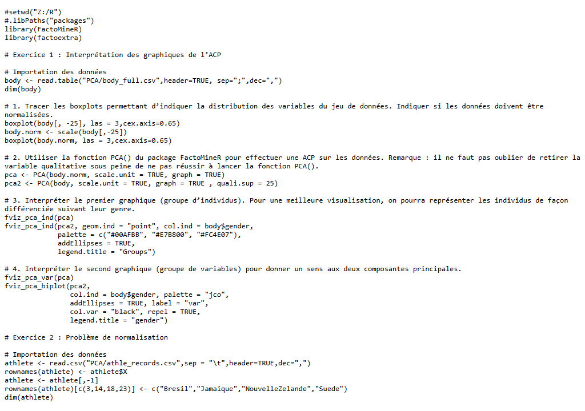
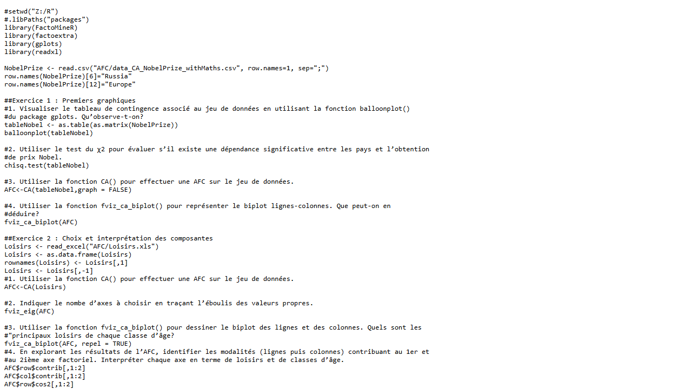

| Nom de la SAE | Méthodes d'analyse multivariée (ACP, AFC, ACM, MDS) | |||
| Sujet spécifique | Application des quatre principales méthodes d'analyse factorielle (ACP, AFC, ACM, MDS) à différents jeux de données en R, avec interprétation des résultats graphiques. |
| Objectifs |
Maîtriser l'ACP (TP1) sur des données morphologiques (body_full) et de records athlétiques. Réaliser une AFC (TP2) sur les données des Prix Nobel par pays et discipline. Mettre en œuvre une ACM (TP3) sur des variables qualitatives (chiens, thé). Appliquer le MDS (TP4) sur une matrice de distances inter-villes et données de naissance. |
| Livrables | Scripts R (TP1.R, TP2.R, TP3.R, TP4.R), graphiques factoriels commentés |
| Compétence | Analyser |
| Apprentissages critiques sollicités | AC22.01 : Prendre conscience de la différence entre modélisation statistique et analyse exploratoire |
| AC22.03 : Comprendre l'intérêt des analyses multivariées pour synthétiser et résumer l'information portée par plusieurs variables | |
| AC22.05 : Apprécier les limites de validité et les conditions d'application d'une analyse | |
| Composantes essentielles à respecter | Choisir entre ACP, AFC, ACM ou MDS selon la nature des données (quantitatives, qualitatives, tableau de contingence, distances). |
| Comprendre et mobiliser les méthodes multivariées pour synthétiser l'information portée par plusieurs variables. | |
| Évaluer les limites de la méthode : variance expliquée, nombre d'axes à retenir, conditions de normalisation. |
| Compétence | Traiter |
| Apprentissages critiques sollicités | AC21.01 : Comprendre l'organisation des données de l'entreprise |
| AC21.04 : Comprendre la nécessité de tester, corriger et documenter un programme | |
| AC21.05 : Apprécier l'intérêt de briques logicielles existantes et savoir les utiliser | |
| Composantes essentielles à respecter | Identifier la structure des données (individus, variables actives, variables supplémentaires). |
| Tester les programmes R, corriger les erreurs et documenter les scripts. | |
| Utiliser les packages FactoMineR et factoextra plutôt que de recoder les méthodes. |
| Compétence | Valoriser |
| Apprentissages critiques sollicités | AC23.01 : Saisir l'intérêt de mobiliser de manière proactive les ressources métiers liées à l'environnement (y compris économique, international...) |
| AC23.02 : Savoir défendre ses choix d'analyses | |
| AC23.03 : Saisir la nécessité de choisir des indicateurs pertinents pour communiquer sur les résultats | |
| AC23.04 : Prendre conscience de la rigueur requise dans ses productions et dans la communication à leur propos | |
| Composantes essentielles à respecter | Mobiliser les connaissances théoriques (cours de méthodes factorielles) pour justifier le choix de la méthode. |
| Défendre les choix d'analyse : pourquoi ACP sur ces données, quels axes retenir, comment interpréter. | |
| Produire des sorties claires et lisibles (graphiques annotés, commentaires des résultats). |
| Savoirs / connaissances | Savoir-faire | Savoir-être |
|---|---|---|
|
ACP : valeurs propres, variance expliquée, biplot. AFC : profils lignes/colonnes, inertie, tableau de contingence. ACM : variables qualitatives, modalités, nuage de points. MDS : matrice de distances, configuration optimale en 2D. |
Utiliser FactoMineR (PCA, CA, MCA) et factoextra (fviz_pca, fviz_ca…). Normaliser les données avec scale() avant une ACP. Représenter individus et variables sur les mêmes axes (biplot). Interpréter les contributions et les cos² des variables. |
Rigueur dans l'interprétation (ne pas lire un graphe sans avoir regardé les axes). Curiosité et esprit d'analyse face aux structures multivariées. Méthode : s'assurer des conditions avant d'appliquer la méthode. |
Ce que je trouve bien réalisé, pourquoi ?
La comparaison des ACP normalisées et non normalisées (body_full.csv) illustre bien l'importance de la normalisation : les résultats sont visuellement très différents et la justification est claire. L'utilisation de fviz_pca_biplot() avec ellipses de confiance par groupe (gender) produit des visualisations lisibles et professionnelles.
Ce que je n'ai pas bien compris ; ce qui serait à améliorer pour une prochaine fois : pourquoi ? comment ?
L'interprétation des axes factoriels au-delà du 2e composant (ACP) et la lecture des AFC n'est pas toujours intuitive. Pour une prochaine fois : systématiquement regarder les contributions et cos² avant d'interpréter ; relire les notions théoriques (profils lignes/colonnes pour l'AFC) avant les TP.

